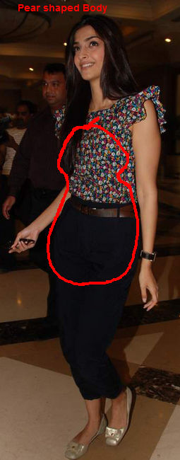
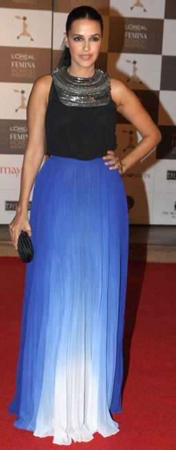
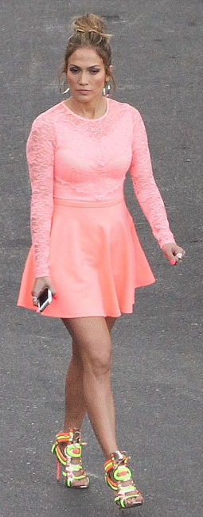
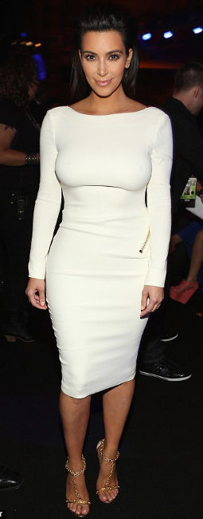
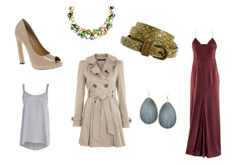
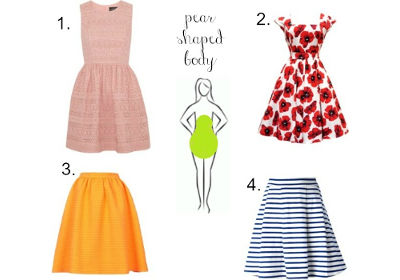
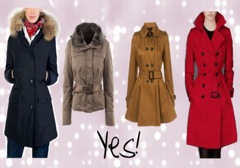
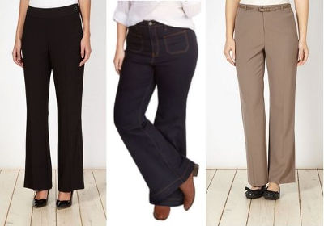

Your Body Doubles
- 
- 
- 
- 
characteristics typical of a PEAR body shape
- Your hips are wider than your shoulder
- Fat tends to accumulate on your thighs and sometimes the buttocks
- You tend to have an elongated waist and the legs tend to be shorter in comparison to the rest of your body
- You have a defined waist
Remember, you can be tall, short, heavy, or skinny and still be pear shaped.Many pear shapes also have a small bust, narrow shoulders, and defined waist.
How to wear
De-emphasize, Define, Elongate
The first part of a conventional figure flattery for pear shape is creating balance between upper and lower halves. It involves deemphasizing the lower half, defining the waistline and elongating the leg line.
Drawing Attention Upwards
The second part of conventional figure flattery for pear shapes is to draw attention upwards.
- 
- 
- 
- 